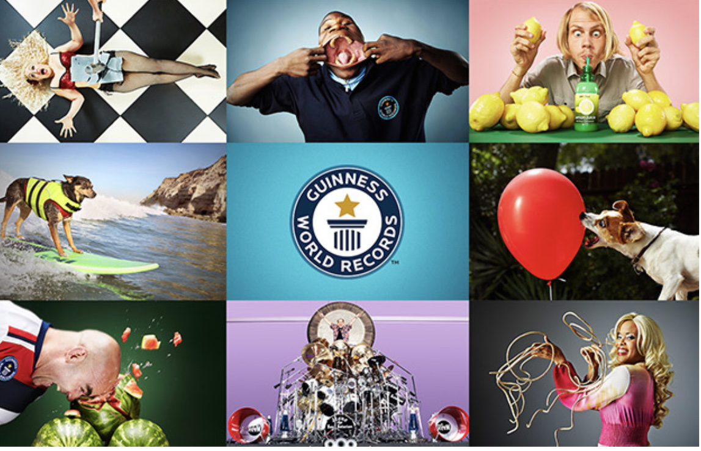

"Книга рекордів Гіннесса"- довідник унікальних досягнень людей та тварин, нечуваних природних явищ та видатних подій шоу-бізнесу, мас-медіа та культури.

За легендою цю книгу створив британський інженер і власник пивоварні Х’ю Бівер, коли відправився з друзями на полювання і між чоловіками зав’язалася суперечка, який з диких птахів найшвидший.
Чоловіки тоді переглянули кілька різних довідників, але відповіді не знайшли. Так Бівер і вирішив створити книгу, що розповідатиме про рекорди. Назвав він її на честь своєї пивоварні. Перша книга вийшла у 1955 році.
Традиційно вона має десять розділів (багатство, слава, відвага, мистецтво та ЗМІ, досягнення, людина, небезпека та катастрофи, спорт, знання, сучасні технології).